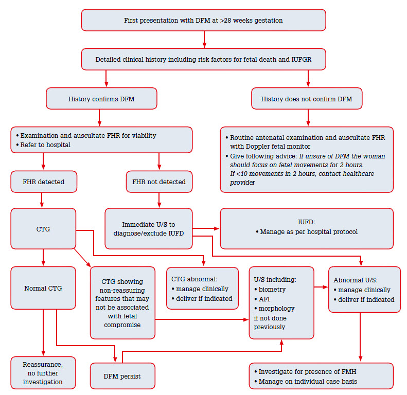

DECREASE FETAL MOVEMENT
Key Questions
- What is the most common cause of decreased movements?
- Sleep cycles (20–40 minutes, rarely exceeds 90 minutes)
- Sleep cycles (20–40 minutes, rarely exceeds 90 minutes)
- What is the main concern?
- Stillbirth
- Linked to fetal complications and fetal problems
- First priority: make sure the baby is alive
- Stillbirth
Normal Fetal Movements
- Start to be felt beyond 20 weeks (average)
- Primiparous: 18–20 weeks
- Multiparous: may be earlier
- Maximum movement between 28 weeks and 34 weeks gestation
- No specific number for movements
- Can vary 4–100 per hour
- No fixed cutoff like “<10 per hour”
- Wake/sleep cycles present
- Diurnal changes (more in afternoon/evening)
- Sleep cycles: 20–40 minutes, rarely >90 minutes
- Non Stress Test (NST) is 20 minutes, expect 2 accelerations
- If none in first 20 minutes → baby may be asleep → repeat another 20 minutes
- If none in first 20 minutes → baby may be asleep → repeat another 20 minutes
- Some define normal as 10+ movements in 2 hours
- Majority feel movements by 20 weeks
- Decreased movement may occur in sleep cycles
Why Decreased Fetal Movements Are Important
- Concerned about:
- Growth problems
- Placental problems
- Oligohydramnios
- Small for gestational age
- Fetal–maternal transfusion
- Infections
- Congenital malformations
- Preterm birth
- Low birth weight
- Induction of labour
- Fetal death
- First major concern: intrauterine fetal death
- Second concern: growth restriction
- Then complications after birth
Causes of Decreased Movements
- Sleep cycle
- Placental insufficiency
- Fetal distress (any cause)
- Reduced amniotic fluid
- Occasionally polyhydramnios
- Substances:
- Sedatives
- Drugs
- Smoking
Key Principle
- Maternal concern overrides everything
- Requires clinical assessment
- Overrides low-risk status
- Any concern (reduced, weak, absent, more, less, harder, softer) → investigate
- Do not rely on kick charts
The 28-Week Threshold
- Decreased fetal movement guidelines apply beyond 28 weeks
- 20–28 weeks: movements present but assessment is challenging
- Before 28 weeks: irregular movements, too early to judge
- Maximum normal movement starts at 28 weeks
Perform Assessment ASAP (Within 2 Hours)
History
- Review current pregnancy
- Look for complications
- Medical conditions affecting pregnancy
- Previous obstetric history
- Review investigations (especially morphology scan)
- Consider risk factors for stillbirth
- Ask:
- Time since onset
- Was mother busy/distracted?
- Sedatives (e.g., temazepam)
- Smoking
- Drugs
- Fever
- Previous medical conditions
- Complications in pregnancy
Examination
- Fundal height
- Uterine tenderness (think abruption)
- Uterine activity/contractions
- Vaginal loss/bleeding
- Fetal heart rate (key)
- Blood pressure (rule out preeclampsia)
- Temperature (infections)
Initial Steps
- Check fetal heart rate
- If absent → urgent ultrasound for viability
- If present → CTG
Purpose: NST and accelerations- Increase of 15 bpm lasting 15 seconds
- At least 2 in 20 minutes
Next Step After CTG
- Normal CTG
- Do ultrasound:
- Growth assessment
- Amniotic fluid
- Placenta
- Do ultrasound:
- If ultrasound normal + no major stillbirth risk factors + first presentation:
- Reassure
- Follow-up in one week
- Provide education on movements
- Non-reassuring CTG
- Investigate further
- Investigate further
Fetomaternal Hemorrhage Testing
- Kleihauer test
- Purpose:
- Detect fetal RBCs in maternal blood
- Concern for Rh isoimmunization
- RACGP:
- Can be considered
- Suggested for abnormal CTG (fetal distress)
- Not done for everyone
Flow Summary

Your next patient is a 27 year old lady, gestational age 32 weeks, who has presented to the Emergency Department concerned that her baby is kicking less than usual.
Task:
• Take history from the Mother.
• Counsel the mother regarding further management
HISTORY TAKING
1. Opening / Empathy
- Concerned mother saying baby is kicking less.
- Be nice, address concerns.
- Acknowledge stress and overwhelm.
- Reassure: “You’re in safe hands.”
- Ask permission to proceed with questions.
2. Exploring the Complaint
Box 1: Describing the Complaint
- “Can you describe what you mean by kicking less?”
- Clarify:
- Less than usual or
- No movement at all.
Box 2: Timing
- When did you first become concerned?
- Is it on and off or constant?
- Is this the first time this has happened in the pregnancy?
Box 3: Exploring More Into the Kicking
- Previously: How many movements/kicks per hour?
- Now: How many movements/kicks?
3. Exploring the Mother / Factors Affecting Feeling Movement
- “Tell me more about your day.”
- Anything special today that made you busy?
- Any smoking today?
- Any medications?
- Any drugs?
- Any fever?
- Were you busy or stressed?
4. Easy OB History
- Regular pregnancy blood tests at beginning? Normal?
- Dating scan?
- Down syndrome screening?
- Ultrasound at 18–20 weeks:
- Were they happy with growth and placenta?
- Were they happy with growth and placenta?
- Sweet drink test at 26–28 weeks.
- Not yet time for swab test (not 36 weeks).
5. Three Groups
A. Current Pregnancy
- Any high blood pressure during pregnancy?
- Any high blood sugar levels?
- Normal weight gain during pregnancy?
B. Symptoms
- Any vaginal bleeding?
- Any fluid leakage?
- Any abdominal pain?
- Any nausea and vomiting?
- Symptoms of preeclampsia:
- Headache
- Blurring of vision
- Dizziness
- Chest pain and shortness of breath
- (Swelling in legs optional)
C. Previous Pregnancy
- Any similar incidents in previous pregnancies?
- Any problems during pregnancy?
- Any complications during delivery?
- Did you deliver a healthy baby?
Wrap-Up
- Good exploration of baby kicking in detail.
- Explore current pregnancy completely.
- Don’t forget symptoms.
PHYSICAL EXAMINATION
General Appearance
- Level of consciousness.
- Jaundice.
- Rash (for infections).
Vital Signs
- Blood pressure (for preeclampsia).
- Temperature (for infections).
Abdominal Examination
- Check for tenderness.
- Check liver.
- Check uterus.
- Leopold’s maneuver:
- Fundal height.
- Fetal heart rate.
- As long as fetal heart rate is normal, you're good.
Pelvic (Speculum) Examination
- If symptomatic:
- Abdominal pain
- Vaginal bleeding
- Discharge
- Look at the os.
Office Test
- CTG (mention it as a key test).
COUNSELING
1. Communication Approach
- Thank you for answering all the questions
- “I understand how stressful and overwhelming it can be but I want to Reassure u that We’ll take good care of you and your baby.”
2. Explain the Issue
- Decreased fetal movements/baby kicking less makes us concerned about the well-being of the baby
- Having said that one of the reason of decreased fetal movement is Sleep cycle which can usually last 20–40 minutes, up to an hour.
Baby is sleeping that’s why he is moving less.
3. But we need to make sure there is no risk to baby as decreased movement can be linked to
- Growth problem.
- Placental problem. (Explain placenta as a bridge that connects you to the baby)
- Infection.
- Preterm labor / preterm birth.
4. What We Need to Do
Step 1: Examination: I will need to examine u.
- I will Measure fundal height (size of the womb).
- Feel the womb/uterus for contractions or pain.
- Examine for vaginal bleeding or fluid leakage (depending on history).
Step 2: Check Fetal Heart Rate: Most imp investigation is to check the baby heart rate with a test that we call CTG.
- in this test we Monitor heart rate for sometime, we Expect 2 increases in heart rate in 20 minutes which r sign of movement. This test can show if the baby is in distress or having a problem.
- If CTG is Reassuring> good sign
- Non-reassuring CTG = we may need to do further investigations.
Step 3: Ultrasound
- I will Review your previous ultrasounds and check the growth of the baby.
- I will Arrange another ultrasound today:
- Check growth.
- Check amount of fluid around the baby.
- Look for placental problems.
Follow-Up
- If CTG reassuring and ultrasound normal:
- Follow up in one week.
- Follow up in one week.
Optional:
- We may consider other tests like Kleihaur test for any possible mixing of baby blood and your blood.
5. Closing
- Most important component is the above plan.
- Ask: “Do you have any other concerns or questions?”
- I will Give u a fact sheet about fetal movements.
- Red flags are too early to discuss here (last thing if needed).